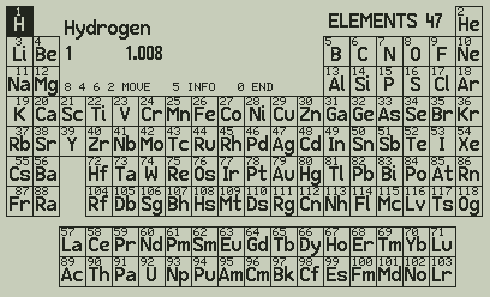
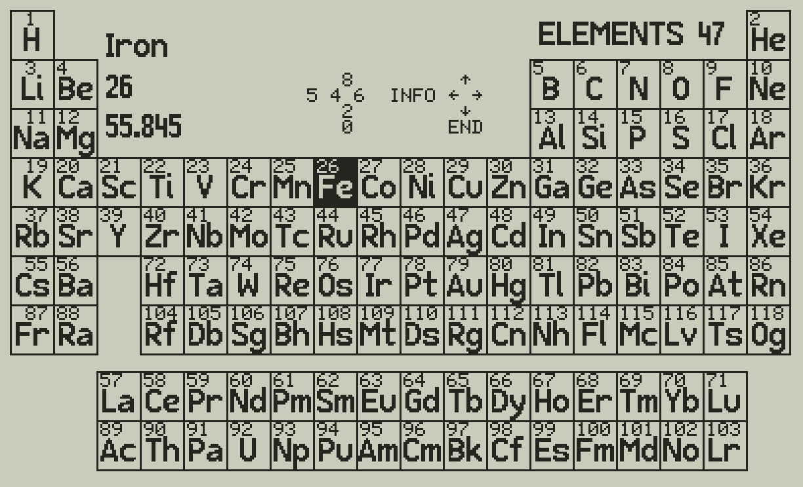
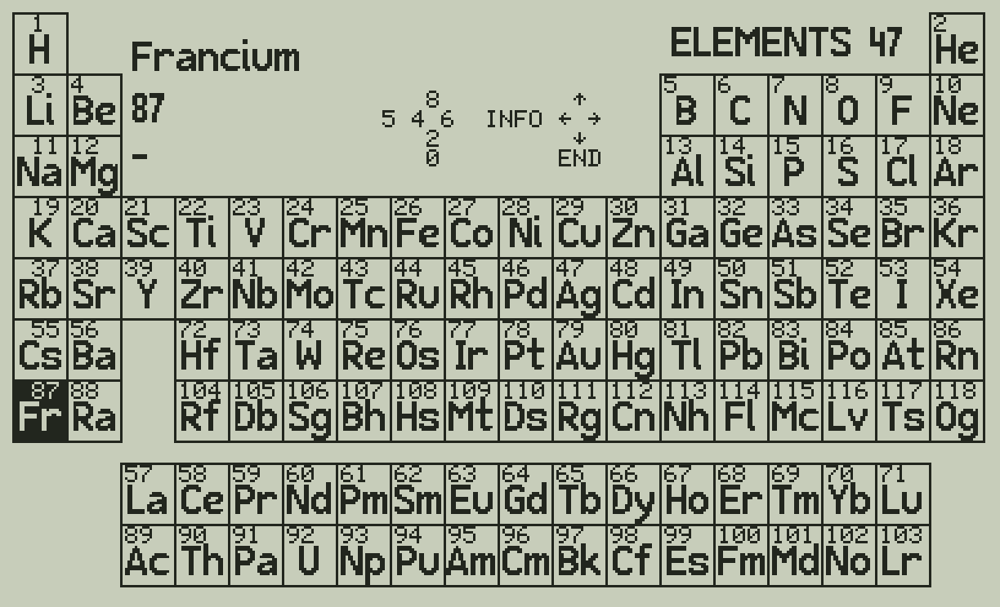
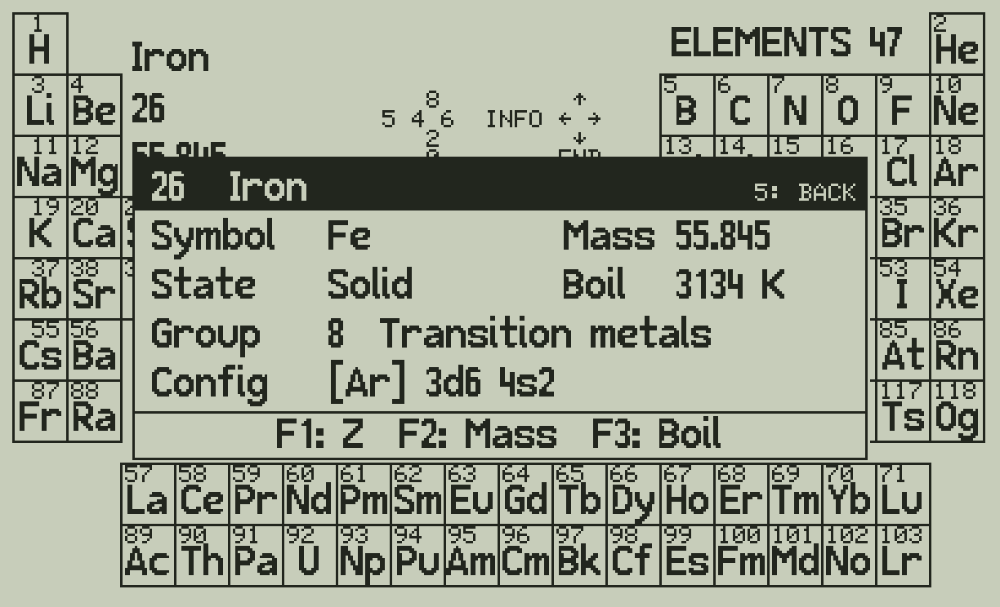
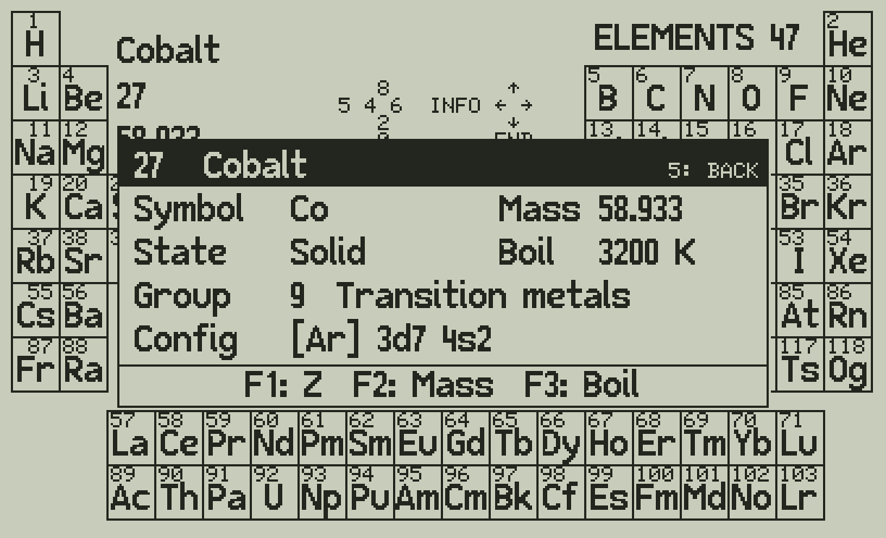
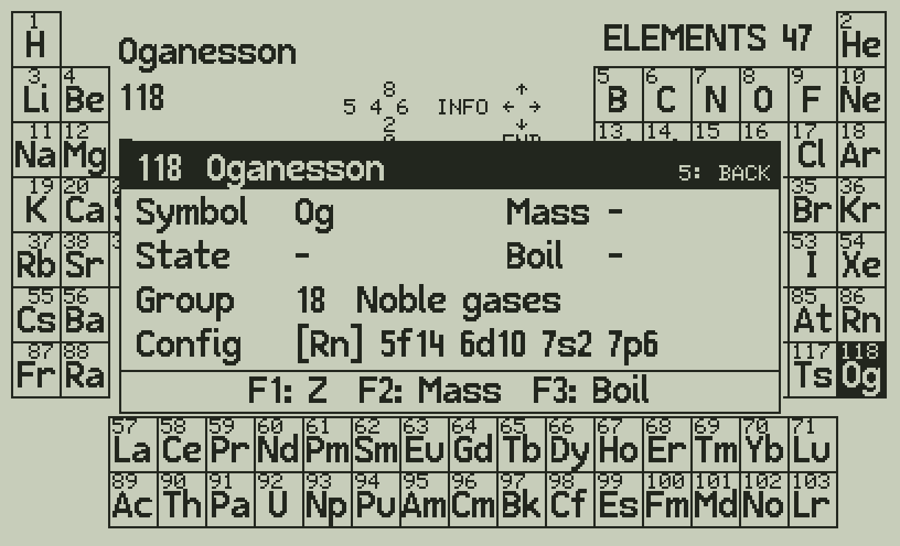

The periodic table of the 118 elements on the C47 / R47: the table on one screen, a cursor you move with the digit keys, and a detail box for each element.
C47_R47/ELEM47.p47 to the calculator (USB disk) and load it as any other program. It holds three programs: ELEM47 (the one you run), ELD1 and ELD2 (the element data).XEQ "ELEM47". After a few seconds the table is on the screen, the cursor on H (hydrogen).

| Key | |
|---|---|
| 8 | up |
| 2 | down |
| 4 | left |
| 6 | right |
The cursor jumps over empty cells, and the panel shows the new element. Three times 2 and seven times 6 from H:

At an edge the cursor goes around to the other side: 8 on H goes to the bottom of column 1, Fr; 4 on H goes to He; 2 on Ac goes up to Sc.

5 opens the box of the element under the cursor: symbol, standard atomic weight, state at room temperature, boiling point, group with its name, and the electron configuration.

With the box open, 8 4 6 2 move the cursor as before and the box shows the new element at once (here 6: from Fe to Co). 5 closes the box, 0 ends; other keys are ignored.

The longest configuration, Og (oganesson):

"-" in a field: no value (the 34 elements without a standard atomic weight, or no data in PubChem).
0 ends ELEM47: the normal calculator screen comes back, with R00-R99 and the stack cleared and the matrix PT (the table's map) deleted.
| Key | Table | Detail box open |
|---|---|---|
| 8 4 6 2 | move the cursor | move, the box of the new element |
| 5 | open the box | close the box |
| 0 | end | end |
Standard atomic weights: IUPAC / CIAAW 2024 (abridged, as on the IUPAC periodic table). State, boiling point, electron configuration: the PubChem periodic table. See NOTICE.
ELEM47 needs three commands of the C47 firmware: the structured programming commands (IF, DO, REPEAT), ATEXT and GRFNT.
Free42_DM42/ELEM47.raw): the same table and keys, without going around the edges.